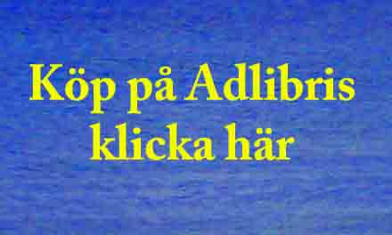
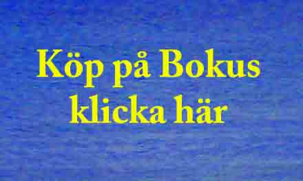

Erika Mikaelssons bok De 17, Curt Källman, den vediske målaren, bjuder en mycket fascinerande läsning om Curt Källman som bland annat är grundaren av den konstriktning som benämns ”Vedic Art” och som har 17 principer. Dessa principer eller steg betraktas som det som startar den kreativa processen.
Boken är ytterst välskriven och författaren har valt att skriva i en stil som närmast kan beskrivas som saklig, men ändå nästan poetisk, prosa med biografiskt innehåll. Boken är mycket läsvärd och ger en god bild av hur Curt Källmans liv som konstnär och konstlärare utvecklats. Det intryck den ger är att den också skrivits under inflytande av just de 17 principerna för ”Vedic Art” – som en navigationskarta med vars hjälp människan uttrycker sig.

